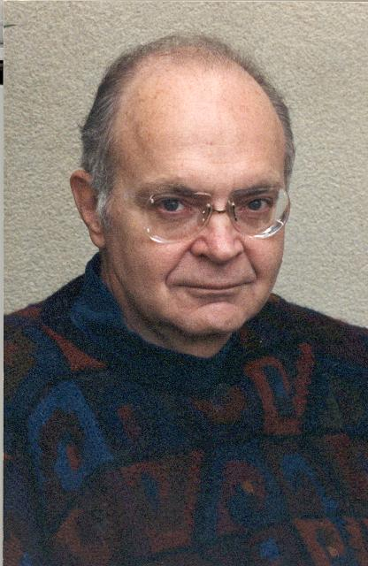
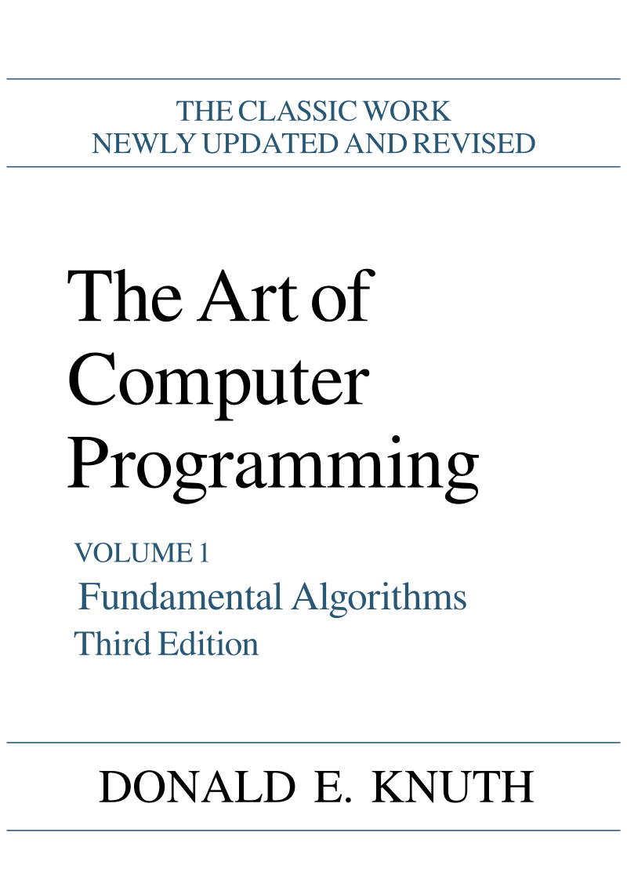

Donald Ervin Knuth (born January 10, 1938) is an American computer scientist, mathematician, and professor emeritus at Stanford University. He is the 1974 recipient of the ACM Turing Award, informally considered the Nobel Prize of computer science. He is most know for being the auther of "The Art Of Programing"
Knuth began the project, originally conceived as a single book with twelve chapters, in 1962. The first three volumes of what was then expected to be a seven-volume set were published in 1968, 1969, and 1973. Work began in earnest on Volume 4 in 1973, but was suspended in 1977 for work on typesetting prompted by the second edition of Volume 2.
